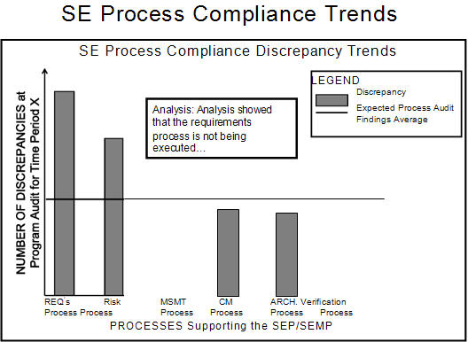

| Example: SE Leading Indicators - Process Compliance Trends (PSM SE) |
 |
|
This indicator is used to evaluate the trends in process compliance discrepancies to ensure that the program is within expected range for process compliance. It indicates where process performance may impact other processes, disciplines, or outcomes of the project. General non-compliance indicates increased risk in ongoing process performance and potential increases in variance. Non-compliance of individual processes indicates a risk to downstream processes. An example of how such an indicator might be reported is shown below. Refer to the measurement specification in Example: Measurement Specification: Process Compliance Trends (PSM SE) for the details regarding this indicator; the specification includes the general information which would be tailored by each organization to suit its needs and organizational practices. 
Systems Engineering Process Compliance Trends. The Process Compliance Discrepancy Trends graph illustrates the number of discrepancies for each major process or process area, along with the expected process audit findings based on historical program or organizational audit information. In this case, it can be seen that there are indications that there are issues with the requirements process and the risk process. Further investigation will be needed to determine the root causes – it could be that processes are not being followed, but there could also be cases where there are opportunities for improvement of the process that are needed. As is done in the second figure, it is often useful to sort the discrepancies by type or cause of the discrepancy. In this case, the largest number of discrepancies are caused by issues with the documentation. Issues with the training or lack of awareness of the processes is the next major source of discrepancies in this example. These issues with the documentation or training reflect opportunities for the program or organization to make improvements that will eliminate the risk of errors in future SE performance. The number of discrepancies can give an indication of process performance strength or weakness, helping the program or organization to prioritize improvement efforts. The Process Tailoring Trend graph, below, depicts the amount of tailoring per process. The numbers on the x-axis of the graph are numerical process identifiers. The graph shows a percentage representing the degree of tailoring for each process by the set of programs in the organization. Furthermore, thresholds are set for the acceptable amount of tailoring before needing to investigate whether the needs with respect to the process have shifted. This could be depicted by threshold lines or color-coding. For example, within the acceptable range is depicted in green and exceeding the acceptable range is red. These thresholds might indicate further investigation is needed to determine if there is a systemic problem: a significant program specific process change might indicate the need to update standard process materials or conversely that the specific program will likely have a great deal of difficulty operating within the standard business processes and the accompanying culture.
Refer to Example: Measurement Specification: Process Compliance Trends (PSM SE) for a detailed understanding of this leading indicator. |


Copyright © 2001–2007 Practical Software & Systems Measurement (PSM). |